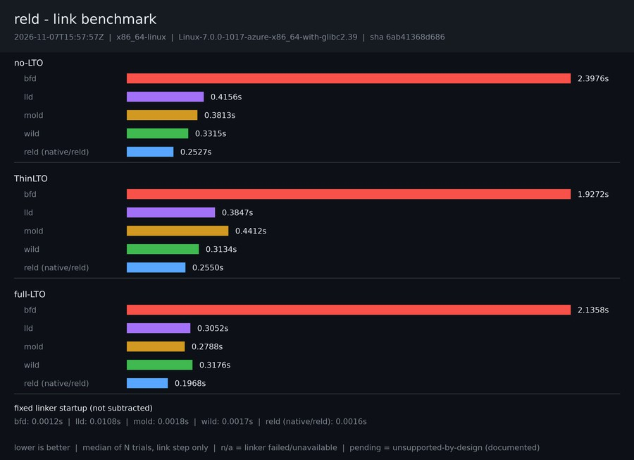

2026-11-07T15:57:57Z · x86_64-linux · Linux-7.0.0-1017-azure-x86_64-with-glibc2.39

| Configuration | bfd | lld | mold | wild | reld (native/reld) |
|---|---|---|---|---|---|
| no-LTO | 2.3976s | 0.4156s | 0.3813s | 0.3315s | 0.2527s |
| ThinLTO | 1.9272s | 0.3847s | 0.4412s | 0.3134s | 0.2550s |
| full-LTO | 2.1358s | 0.3052s | 0.2788s | 0.3176s | 0.1968s |
Reported raw and never subtracted from final-link medians.
| Series | Seconds |
|---|---|
| bfd | 0.0012s |
| lld | 0.0108s |
| mold | 0.0018s |
| wild | 0.0017s |
| reld (native/reld) | 0.0016s |